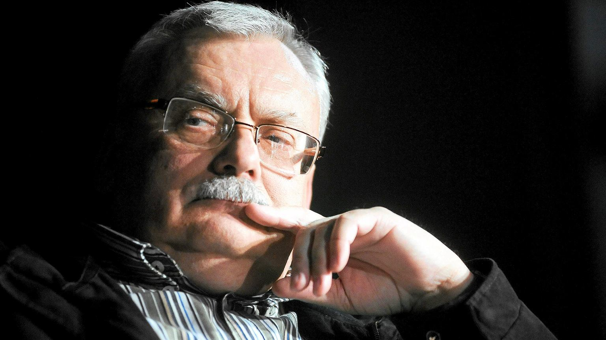
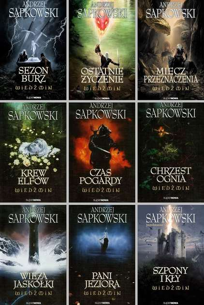

|  Mimo tego, co mogą myśleć niektórzy, najpierw powstały książki napisane przez Andrzeja Sapkowskiego. Z początku opowiadanie zostało napisane na konkurs "Fantastyki" w 1986r. Stworzono również dwa seriale, jeden polski w 2002r. oraz drugi na serwisie Netflix w 2019r. W latach 1993-1995 wydawano również komiksy, ale nie zyskały one jednak takiej sławy jak książki lub gry. W wywiadzie dla Radia Gdańsk w 2012r, Sapkowski zapowiedział kontynuację wiedźmińskich przygód. Ostatnia książka zatytuowana "Sezon burz" została opublikowana w 2013r. |
| 
Łącznie powstało 9 książek w tym 1, w pełni napisana przez fanów sagi, a zatwierdzona przez Sapokowskiego. Przez lata oraz z rozwojem gier komputerowych o wiedźminie zmieniały się również okładki książek. |